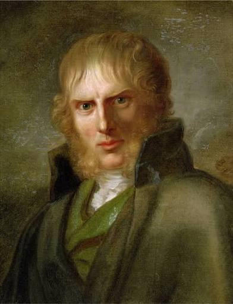
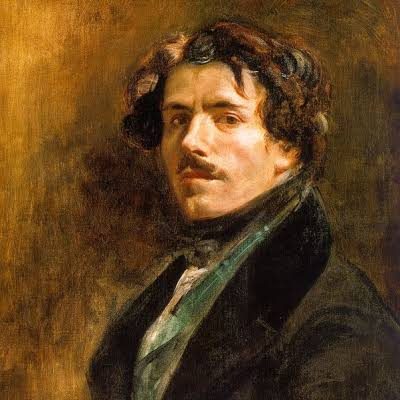
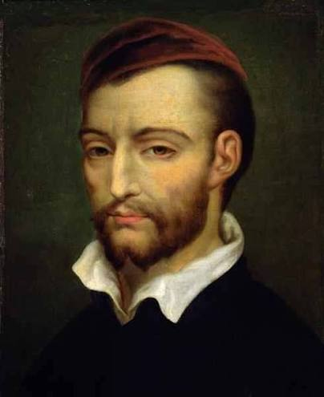
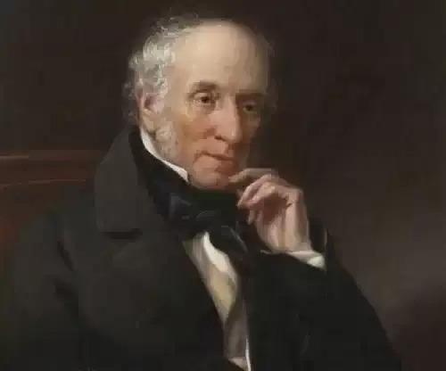
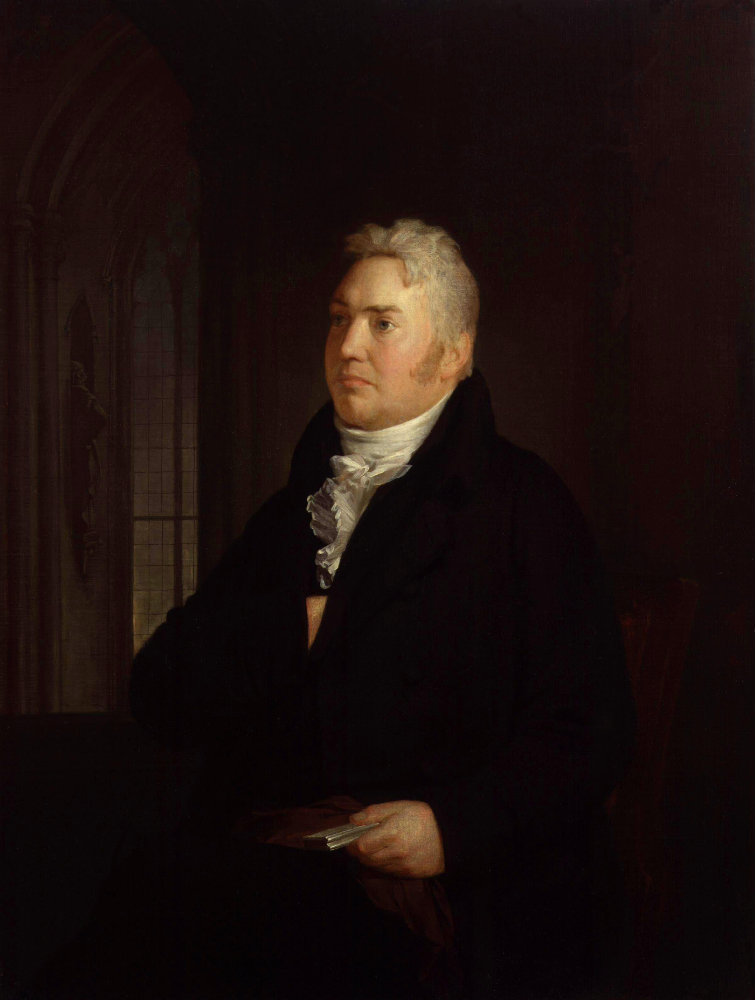
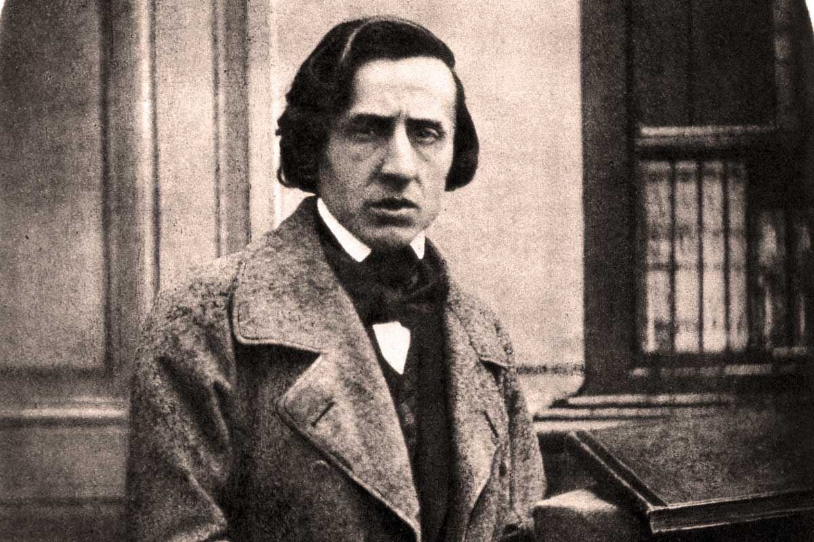

Caspar David Friedrich
Fue un pintor alemán que se dedicó principalmente al paisaje. Le interesaba mostrar cómo una persona podía sentirse frente a la inmensidad de la naturaleza.
Sentir, imaginar y crear
1780–1850
Comenzar el recorridoEl Romanticismo fue un movimiento cultural y artístico que surgió en Europa a finales del siglo XVIII y se desarrolló durante la primera mitad del siglo XIX. Los artistas románticos dieron mucha importancia a los sentimientos, la imaginación y la libertad de crear. El movimiento se expresó de distintas maneras según el país y tuvo presencia en la pintura, la literatura y la música.
En la pintura, por ejemplo, un paisaje podía transmitir lo que sentía una persona ante la naturaleza. Una montaña cubierta de niebla podía despertar admiración y, al mismo tiempo, hacer que quien la contemplaba se sintiera pequeño. Algunos artistas también se inspiraron en hechos de su época, como naufragios y revoluciones, para mostrar cómo los vivían las personas.

Fue un pintor alemán que se dedicó principalmente al paisaje. Le interesaba mostrar cómo una persona podía sentirse frente a la inmensidad de la naturaleza.

Fue un pintor francés y una de las figuras del Romanticismo en la pintura. En sus cuadros, se valía del color y del movimiento para transmitir la intensidad de una escena.

Fue un pintor francés que se interesó por representar el sufrimiento humano. Encontró en los hechos de su propia época temas para pintar escenas dramáticas.

Fue un poeta inglés que encontraba inspiración en la naturaleza y en la vida cotidiana. Le interesaba mostrar cómo algo tan común como un paseo o un paisaje podía despertar recuerdos y sentimientos.

Fue un poeta inglés que dio mucha importancia a la imaginación. Le gustaba explorar lo misterioso y lo sobrenatural, y buscaba que esas escenas resultaran creíbles para quien las leyera.

Fue un compositor y pianista polaco. El piano fue el centro de su trabajo como intérprete y compositor, y también se dedicó a enseñarlo.
Selecciona un acontecimiento para explorar qué sucedió y dónde ocurrió.
1798
Lugar: Gran Bretaña.
Wordsworth y Coleridge publicaron juntos esta colección de poemas. El libro reunía escenas de la vida cotidiana y relatos con elementos sobrenaturales. También experimentaba con el lenguaje de la poesía, acercándolo en varios poemas a la forma de hablar de la gente. Con el tiempo, la colección se convirtió en una obra clave del Romanticismo inglés.
1818
Lugar: Territorios alemanes. La obra se conserva en Hamburgo.
Pintado por Friedrich, podemos observar como un hombre de espaldas, de pie sobre unas rocas, mira un paisaje en el que las montañas sobresalen entre la niebla. Como no vemos su rostro, podemos imaginar lo que sentiríamos en su lugar. El contraste entre la figura y la extensión del paisaje ayuda a entender lo sublime: la mezcla de admiración e inquietud ante algo que nos supera.
Fuentes: [3].
1819
Lugar: París, Francia.
El cuadro, presentado en el Salón de París de 1819 por Géricault, se inspiró en el naufragio de un barco francés. En la parte baja de la pintura vemos a varios náufragos tendidos sobre la balsa. Más arriba, otros se incorporan y agitan una tela para llamar la atención de un barco en el horizonte. La distancia entre la balsa y el barco deja en suspenso la posibilidad del rescate.
Fuentes: [2].
1830
Lugar: París, Francia.
Delacroix buscó representar el levantamiento de julio de 1830 contra Carlos X. En el centro, una mujer que representa a la Libertad cruza una barricada con la bandera francesa en alto. A su alrededor avanzan varios rebeldes, mientras en el suelo quedan los cuerpos de quienes cayeron. La escena reúne el impulso de la revuelta y la violencia de esos días.
Fuentes: [2].
1831
Lugar: París, Francia.
Chopin llegó a París en 1831 y al año siguiente dio su primer concierto público en la ciudad, en los salones Pleyel. Esa presentación fue un paso importante para darse a conocer en el ambiente musical parisino, donde continuó su carrera.
El Romanticismo nos permite acercarnos a lo que vivieron las personas de esa época. Una fecha nos dice cuándo ocurrió una revuelta o un naufragio. Una pintura, en cambio, puede hacernos pensar en el miedo, la esperanza o la incertidumbre de quienes estuvieron allí. La poesía y la música también dieron un lugar importante a esas experiencias personales.
En El caminante sobre el mar de nubes, Friedrich nos deja ver el paisaje desde detrás del caminante, pero no podemos ver su expresión. En La libertad guiando al pueblo, Delacroix coloca en medio de una revuelta real a una mujer que representa una idea: la libertad. Las dos obras muestran cómo la mirada del artista influye en lo que sentimos y en cómo podemos interpretar una escena.